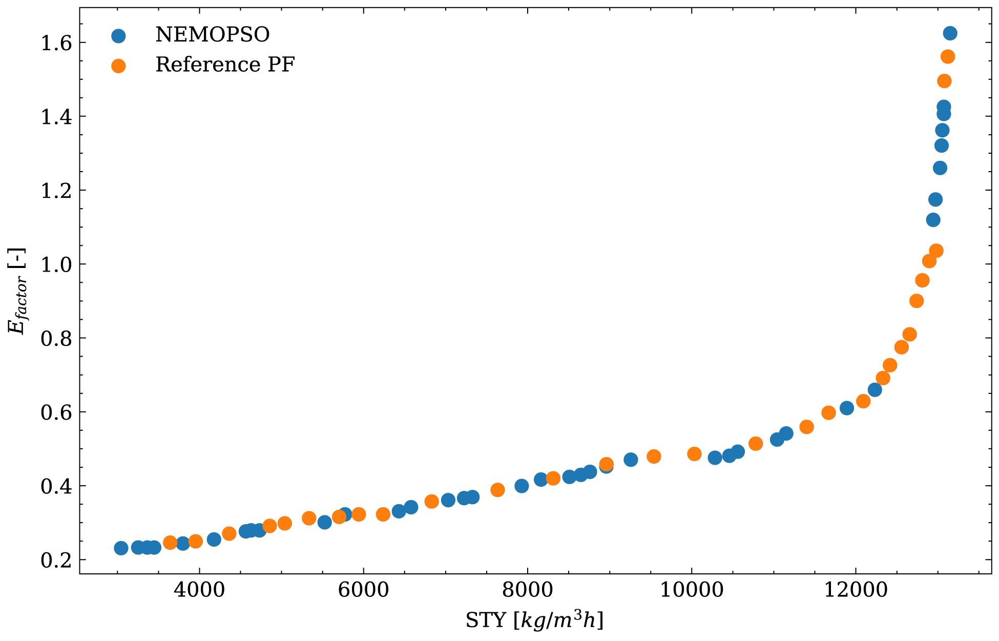

SnAr Reaction Optimization
Optimization Problem
\[
\begin{aligned}
\min_{t_{res},\,\text{eq}_{morph},\,C_{DFNB},\,T}\quad & \left\{\, -\,\text{STY},\;\; E_{factor} \,\right\} \\[4pt]
\text{s.t.}\quad & 0.5\ \text{min} < t_{res} < 2\ \text{min} \\
& 1\ \text{eq} < \text{Morpholine} < 5\ \text{eq} \\
& 0.1\ \text{M} < C_{DFNB} < 0.5\ \text{M} \\
& 60\ ^\circ\text{C} < T < 140\ ^\circ\text{C}
\end{aligned}
\]
\[
E_{factor} = \frac{m_{\text{undesired products}}}{m_{\text{o-FNM}}}
\]
Variables
| Symbol | Description |
|---|---|
| \(t_{res}\) | Residence time (decision) |
| Morpholine | Morpholine equivalents (decision) |
| \(C_{DFNB}\) | DFNB concentration (decision) |
| \(T\) | Reaction temperature (decision) |
| STY | Space-time yield |
Pareto Front

Source problem
Schweidtmann, A.M., Clayton, A.D., Holmes, N., Bradford, E., Bourne, R.A., Lapkin, A.A. (2018). Machine learning meets continuous flow chemistry: Automated optimization towards the Pareto front of multiple objectives. Chemical Engineering Journal, 352, 277–282. doi:10.1016/J.CEJ.2018.07.031